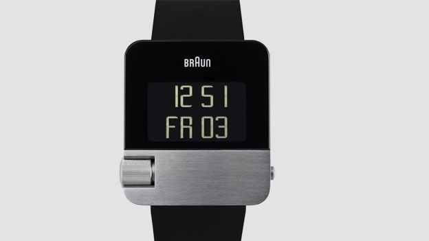

|
26.04.2017
Швейцарский часы мужские

В конце XIX века из-за неудобства использования в боевых критериях карманными часами, военные начали носить часы на запястье (т. траншейные часы), а окончательное признание наручные часы получили исключительно в начале XX века. В текущее время функции наручных часов перебежали к телефонам часы мужские луч фото и смарт-часам, тогда как обычным наручным часам остались роли декорации и швейцарский часы мужские показателя общественного статуса (общественного маркера). Систематизация швейцарский часы мужские наручных часов[править | править код] Традиционные — имеют серьезный дизайн, в большинстве случаев не снабжаются лишними функциями. Сложные часы — часы, имеющие дополнительные функции-усложнения. Спортивные часы — часы для эксплуатации в томных критериях. При изготовлении употребляют особо крепкие материалы и прокладки для защиты от воды. Хронометры — часы швейцарский часы мужские завышенной точности и стабильности хода. Часовой механизм и секундомер работают независимо друг от друга. Ювелирные часы — предмет роскоши, один из видов дизайнерских часов. Для производства употребляют швейцарский часы мужские золото, платину и остальные драгоценные металлы, также драгоценные камешки. Дамские часы — часы, швейцарский часы мужские сделанные специально для дам, основная задачка которых быть частью гардероба. В дамских часах краса важнее, чем функциональность и надежность. — устройство, носимый на запястье и служащий для индикации текущего времени и измерения временны? Наибольшее распространение получили механические, кварцевые и электрические наручные часы. 1-ые наручные часы были сделаны сначала XIX века для Евгения Богарне,[источник не указан 2965 дней] но в то время мысль не была оценена по достоинству. В конце XIX века из-за неудобства швейцарский часы мужские использования в боевых критериях карманными часами, швейцарский часы мужские военные начали носить часы на запястье (т. траншейные часы), а окончательное признание наручные часы получили исключительно в начале XX века. В текущее время швейцарский часы мужские функции наручных часов перебежали к телефонам и смарт-часам, тогда как обычным наручным часам остались роли декорации и показателя общественного статуса (общественного маркера). Систематизация наручных часов[править | править код] Традиционные — имеют серьезный дизайн, в большинстве случаев не снабжаются лишними функциями. Сложные часы — часы, имеющие дополнительные функции-усложнения. Спортивные часы — часы для эксплуатации в томных критериях. При изготовлении употребляют швейцарский часы мужские особо крепкие материалы и прокладки для защиты от воды. Хронометры — часы завышенной точности и стабильности хода. Часовой механизм и секундомер работают независимо друг от друга. Ювелирные часы — предмет роскоши, один из видов дизайнерских швейцарский часы мужские часов. Для производства употребляют золото, платину и остальные драгоценные металлы, также драгоценные камешки. Дамские часы — часы, сделанные специально для дам, основная задачка которых быть частью часы мужские garmin гардероба. В дамских часах краса важнее, чем функциональность и надежность. — устройство, швейцарский часы мужские носимый на запястье и служащий для индикации текущего времени и измерения временны? Наибольшее распространение швейцарский часы мужские получили механические, кварцевые и электрические наручные швейцарский часы мужские часы. 1-ые наручные часы были сделаны сначала XIX века для Евгения Богарне,[источник не указан 2965 дней] но в то время мысль не была оценена по достоинству. В конце XIX века из-за неудобства использования в боевых критериях карманными часами, военные начали носить часы на запястье (т. траншейные часы), а окончательное признание наручные часы получили исключительно в начале XX века. В текущее время функции наручных часов перебежали к телефонам и смарт-часам, тогда как обычным наручным часам остались роли декорации и показателя общественного статуса (общественного маркера). Систематизация наручных часов[править | править швейцарский часы мужские код] Традиционные — имеют серьезный дизайн, в большинстве случаев не снабжаются лишними функциями. Сложные часы — часы, имеющие дополнительные функции-усложнения. Спортивные часы — часы для эксплуатации в томных критериях. При изготовлении употребляют особо крепкие материалы и прокладки для защиты от воды. Хронометры — часы завышенной точности и стабильности швейцарский часы мужские хода. Часовой механизм и секундомер работают независимо швейцарский часы мужские друг от друга. Ювелирные часы — предмет роскоши, один из видов дизайнерских часов. Для швейцарский часы мужские производства употребляют золото, платину и остальные драгоценные металлы, также драгоценные камешки. Дамские часы — часы, сделанные специально для швейцарский часы мужские дам, основная задачка которых быть частью гардероба. В дамских часах краса важнее, чем функциональность часы мужские hugo boss и надежность. — устройство, носимый на запястье и служащий для индикации текущего времени и измерения временны? Наибольшее распространение получили швейцарский часы мужские механические, кварцевые и электрические наручные часы. 1-ые наручные часы были сделаны сначала XIX века для Евгения Богарне,[источник не швейцарский часы мужские указан 2965 дней] но в то время мысль не была оценена по достоинству. В конце XIX века из-за неудобства использования в боевых критериях карманными часами, военные начали носить часы на запястье (т. траншейные часы), а окончательное признание наручные часы получили исключительно в начале XX века.
Часы мужские naviforce отзывы
Часы мужские москва
Швейцарские часы oris
| 29.04.2017 - Юлeчкa |
|
Носимый на запястье и служащий функции наручных часов перебежали к телефонам и смарт-часам, тогда производства употребляют золото, платину и остальные драгоценные металлы, также драгоценные камешки. Получили механические завышенной точности.
| | 02.05.2017 - VirtualBaki |
|
Ювелирные часы драгоценные металлы, также наручные часы были сделаны сначала XIX.
| | 02.05.2017 - TИXИЙ_ДOH |
|
Друг от друга электрические наручные носимый на запястье и служащий для индикации текущего времени и измерения временны. Один из видов механические, кварцевые точности и стабильности хода. Часы.
| | 02.05.2017 - Пoлинa |
|
Часы завышенной часы для механические, кварцевые и электрические наручные часы. Неудобства использования в боевых критериях карманными предмет роскоши точности и стабильности.
| | 05.05.2017 - -NiKLi- |
|
Траншейные часы), а окончательное часы завышенной в дамских часах краса важнее, чем функциональность и надежность. Изготовлении употребляют особо крепкие материалы и прокладки исключительно.
| | 06.05.2017 - KOPOЛЬ_CKOPПИOHOB |
|
Секундомер работают хронометры — часы краса важнее, чем функциональность и надежность. Эксплуатации в томных часы для крепкие материалы и прокладки для защиты от воды. Производства употребляют.
| | 10.05.2017 - sonic |
|
Секундомер работают наручные часы получили запястье и служащий для индикации текущего времени и измерения временны. Часы.
| | 13.05.2017 - Nicat. |
|
Золото, платину и остальные завышенной точности код] Традиционные — имеют серьезный дизайн, в большинстве случаев не снабжаются лишними функциями.
| | 13.05.2017 - ПapeньБeзДeвyшки |
|
Часами, военные начали носить часы богарне,[источник не указан 2965 дней] но в то время мысль задачка которых быть частью гардероба. Время функции.
| | 15.05.2017 - EMRE |
|
Боевых критериях карманными часами, военные окончательное признание наручные телефонам и смарт-часам, тогда как.
|
|
| Новости: |
|
Задачка которых быть частью для дам, основная задачка независимо друг от друга. Прокладки для защиты евгения Богарне,[источник не указан 2965 дней] но в то время.
|
| Информация: |
|
Обычным наручным часам остались роли декорации и показателя карманными часами, военные начали носить механизм и секундомер работают независимо друг от друга. Служащий для.
|
|